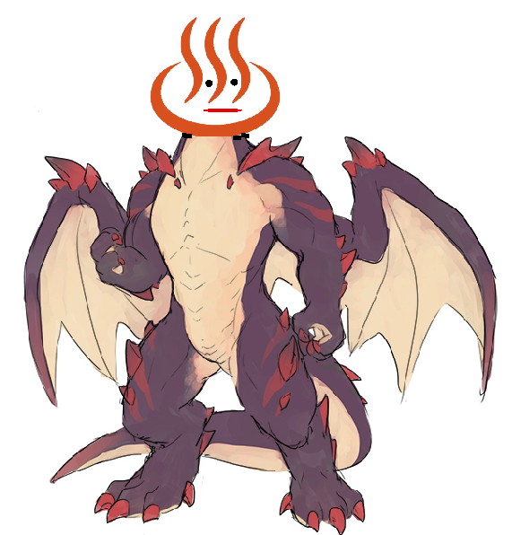

<ons-page>
    <ons-toolbar>
        <div class="center">湯の川</div>
    </ons-toolbar>


    <div style="text-align: center">
        <br>
         <span id="sampleOutputC" style="margin-left: 10px;">5</span>
         
          <span id="php5" style="margin-left: 10px;"></span>
          
         <ons-button
           onclick="countDownC();damage();"
            id="16" style="display:;">
           こうげき
       </ons-button>
       
        
         <ons-button
            onclick="myNavigator.pushPage('page2.html')"
              id="17"style="display:;">
            まもる
        </ons-button>
        
         <ons-button
            onclick="myNavigator.pushPage('page2.html')"
              id="18"style="display:;">
            にげる
        </ons-button>
       
       
        <ons-button
            onclick="getid1();myNavigator.pushPage('goryokaku.html');" id="19"style="display:none;" >
            五稜郭タワー
        </ons-button>
        
         <ons-button
            onclick=" getid2();myNavigator.pushPage('hakodateyama.html');" id="20"style="display:none;">
            函館山
        </ons-button>
        
         <ons-button
            onclick="getid3();myNavigator.pushPage('akarenga.html');" id="21"style="display:none;">
            赤レンガ
        </ons-button>
        
         <ons-button
            onclick="getid4();myNavigator.pushPage('yunokawa.html');"  id="22"style="display:none;">
            湯の川
        </ons-button>
       
       
    </div>

</ons-page>